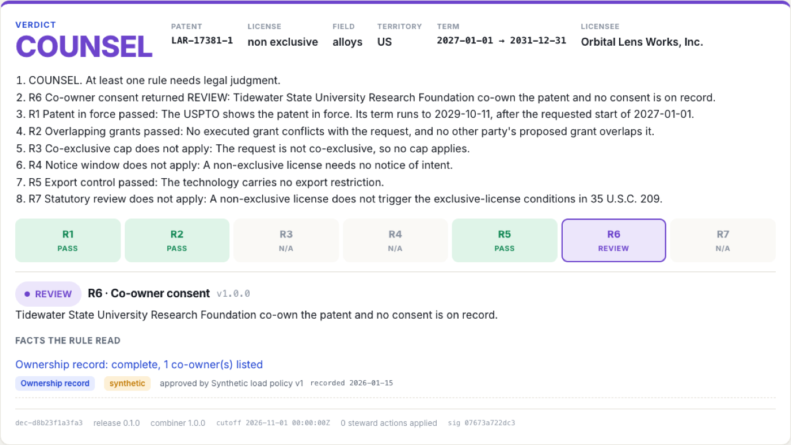
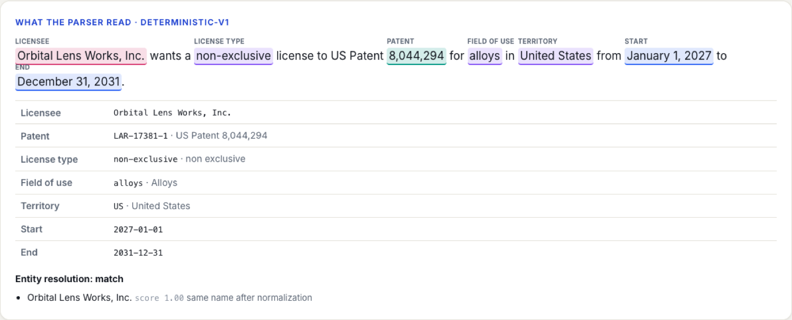
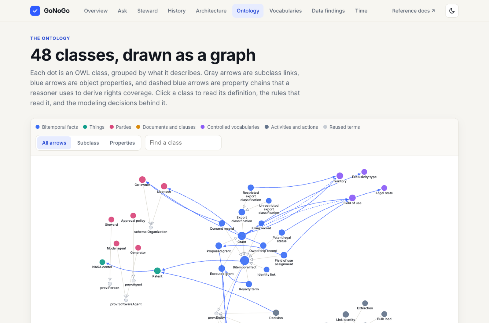
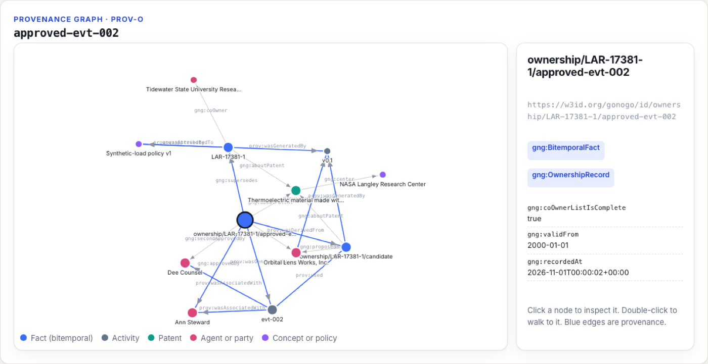
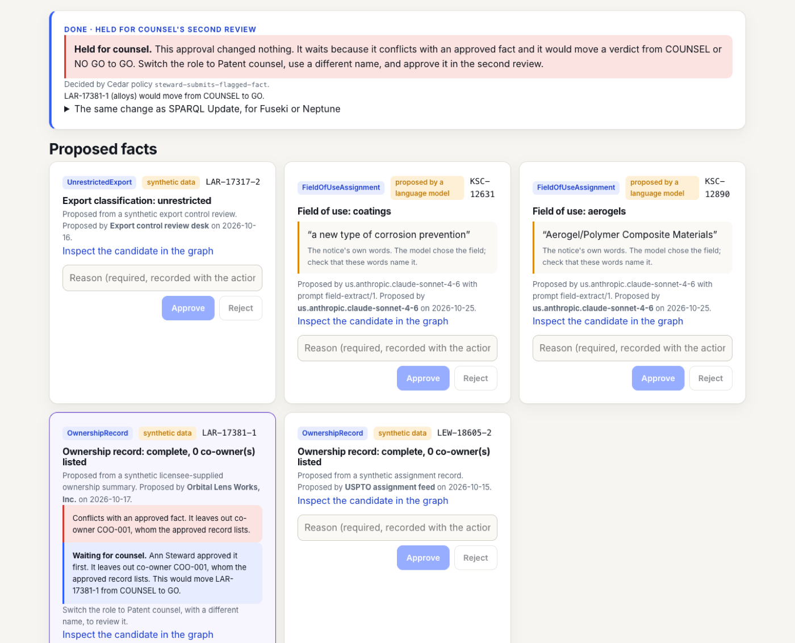
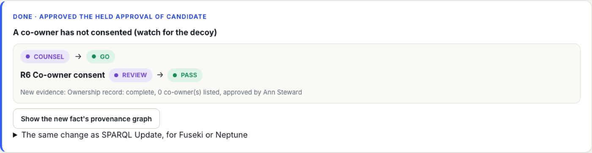
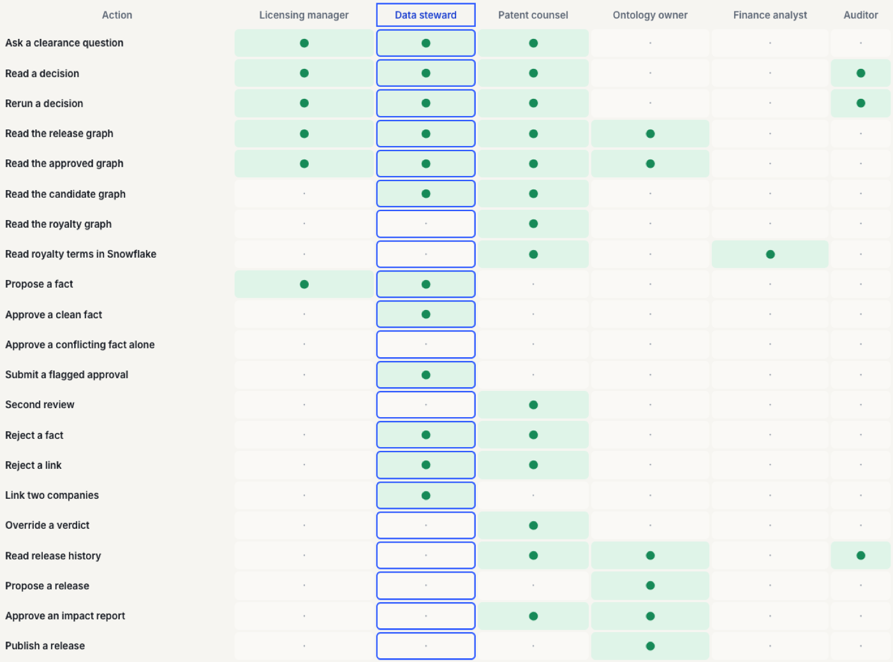

Is the patent still alive?
Fees go unpaid and terms end. A snapshot can still say "in force" after the patent has lapsed.
Patent license clearance, with proof
GoNoGo runs the five checks a technology-transfer office does by hand, then answers GO, NO GO, HOLD, COUNSEL, or NO DATA. Each answer shows the rule that decided it and the source of every fact that rule read.
The problem
A company asks NASA for a license to a patent, for one use, in one place, for some years. Before anyone says yes, someone must confirm each of these:
Fees go unpaid and terms end. A snapshot can still say "in force" after the patent has lapsed.
Same use, same territory, overlapping dates. A broader grant covers a narrower request.
NASA must announce an exclusive license and wait for objections before it can sign.
Export control can forbid the technology from reaching the licensee's country.
When a university or company co-owns the patent, every co-owner must consent. A missing record is not a yes.
By hand, these checks mean several lists, scanned PDFs, and memory. The error that costs most is clearing a license that should have been blocked, because nothing flags it.
The answer
Write the request as a sentence that names the licensee, patent, license type, use, place, and dates. GoNoGo runs the seven checks and gives one of five answers.
A missing fact is not a yes. If no ownership record exists, the answer is NO DATA, not GO.

How it works
The parser turns the words into a patent, a license type, a use, a place, and dates. It lists anything it cannot find as missing.

Each rule asks the knowledge graph a fixed question. The same request on the same records gives the same answer, every time.

Each fact records its source, who approved it, and when the system learned it. A past decision can be rerun exactly.

The proof
Two hundred clearance questions went to four ways of answering, scored against verdicts fixed by hand when each case was planted. All four had the same facts.
The agent cited the deciding agreement 91% of the time and still misapplied the rule. The model reads. The rules decide.
The questions are synthetic and few: 45 planted cases, each asked four ways, plus 20 that cannot be answered as asked. They test every rule and its hard edges, but they were written by the same project that wrote the rules. One model (Claude Haiku 4.5) was used throughout. Read the method, the failures, and the limits.
Built for the people who sign off
A model may propose a fact. Only people approve it, and the system requires a second approver when one is not enough.



Textract reads it, fixed patterns extract the grant, SHACL checks it, and a workflow waits for a steward. A planted instruction inside an agreement changed no verdict.
Cedar policies decide which role may read which graph. Royalty terms never leave their own graph and are excluded from every export and demo.
Every decision stores its cutoff, release, facts, and a signature, with a locked copy. An auditor reruns it and gets the identical answer.
For the practitioner
The classes and properties are defined in the ontology file, and sixteen written modeling decisions explain the choices behind them. Fifteen competency questions, written before the model, check that it can answer what the rules ask.
Architecture
Seven views, drawn with the AWS icon set. The graph sits in a VPC with no route to the internet, and only two functions may write to it. Click a diagram to enlarge it.
Numbers follow one clearance question from the browser to a stored, signed decision.
Fifteen steps from sign-in to a stored decision. The role comes from the token, never from the request.
A Step Functions state machine waits for a steward with a task token before anything reaches the graph.
No NAT, no internet gateway, no interface endpoints. Eleven checks ran against the live stack and all passed.
Which role may query which graph, read from the Cedar policies when the diagram is built.
The same questions and the same facts go to every answerer. Only the method differs.
Deployed for a session, checked, and torn down by one script. Only the graph database bills while idle.
Watch
The ontology, the trail behind a fact, the path to a verdict, the AWS design, and the benchmark. Captions included.
Beyond patents
A studio clearing a film for streaming asks a question of the same shape: who holds which rights, where, and when, and does a new request collide with an existing grant?
Explore